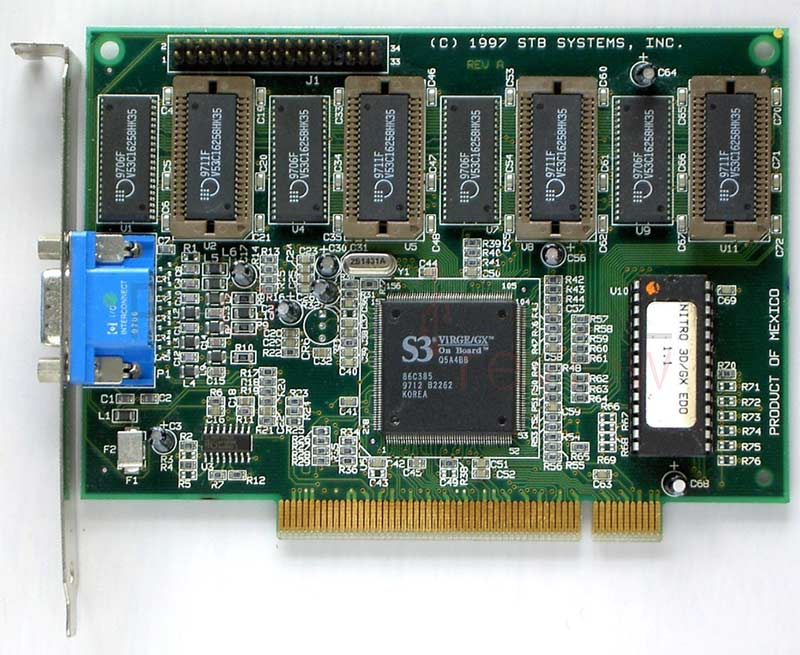

Tarjeta Grafica
►Concepto
tiene la función principal de transformar los datos que envía el procesador. El resultado es una información visible y comprensible que puede apreciar el usuario. La tarjeta de video cuenta con componentes diseñados para procesar imágenes de video
